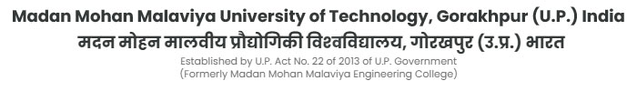

The National Service Scheme (NSS) is a government-backed public service program in India, operating under the Ministry of Youth Affairs and Sports. Launched in 1969 to commemorate Mahatma Gandhi's centenary year, NSS focuses on developing students' personalities through community service.
NSS is a voluntary organization for young people in colleges, universities, and higher secondary schools, aiming to establish campus-community connections, especially in rural areas. As a Central Sector Program, NSS provides students with hands-on experience in community service.
Since its inception, NSS has grown significantly, from 40,000 participants in 1969 to over 3.8 million by March 2018. Today, NSS has more than 3.2 million student volunteers across 298 universities and 42 (+2) senior secondary councils.